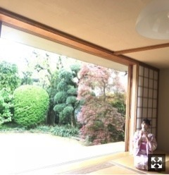

2018/0612Tueかき氷たべたくなる
今日発売 ar のオフショット載せます！



#彼女と浴衣デートなう
に使ってね♡
個人的にも浴衣などの和服が好きなので
色んなかわいい浴衣が着れて
嬉しかった〜
夏を先取りしちゃいました♪
誌面では色んな浴衣がみれるので
ぜひ！！みてね
皆さんはどの浴衣がお好き？？
2018/06/12 17:24
コメント(406)
未央奈～ こんにちは
連日のブログ更新、ありがとうございます。
「ar」の発売、おめでとうございます。
浴衣姿の未央奈もいいですね。特に２枚目の写真、「うなじ」最高ですね。「彼女と浴衣デートなう」に使っていいなんて、ホントいいんですか？ まぁ、この年ですから使うことはありませんが、うらやましい限りですね。
梅雨時です。体調管理くれぐれも気をつけてくださいね。
連日のブログ更新、ありがとうございます。
「ar」の発売、おめでとうございます。
浴衣姿の未央奈もいいですね。特に２枚目の写真、「うなじ」最高ですね。「彼女と浴衣デートなう」に使っていいなんて、ホントいいんですか？ まぁ、この年ですから使うことはありませんが、うらやましい限りですね。
梅雨時です。体調管理くれぐれも気をつけてくださいね。
みおたん！♡
arみたよ！元々ピンクとむらさきがすきだから、ピンクとむらさきの浴衣を着たみおたんに心奪われました。当分のエネルギー補給できた気がします、可愛いは正義！
arのみおたんはいつもとびっきりかわいいからこれからもたくさんかわいい発信して欲しいです！
arみたよ！元々ピンクとむらさきがすきだから、ピンクとむらさきの浴衣を着たみおたんに心奪われました。当分のエネルギー補給できた気がします、可愛いは正義！
arのみおたんはいつもとびっきりかわいいからこれからもたくさんかわいい発信して欲しいです！
全部可愛いけど3枚目のやつ好きです〜
こんにちは！
今回で2回目のコメントです。
全ての写真可愛いですが私は特に一番最後が好きです。
逆に掘ちゃんはどの写真が一番好きですか？
今回で2回目のコメントです。
全ての写真可愛いですが私は特に一番最後が好きです。
逆に掘ちゃんはどの写真が一番好きですか？
ごめんなさい！
ブログの写真が気になりすぎて、男性(25)の私がarを買ってしまいました！！女性ファッション誌を買う日が来るとは(笑)
堀未央奈最高！！
ブログの写真が気になりすぎて、男性(25)の私がarを買ってしまいました！！女性ファッション誌を買う日が来るとは(笑)
堀未央奈最高！！
浴衣って、涼しげでいいね
一枚目の浴衣が好きや～
堀ちゃんには、淡い色合いが似合う♪
一枚目の浴衣が好きや～
堀ちゃんには、淡い色合いが似合う♪
ブログ更新ありがとう！
パシフィコ横浜の個握めっちゃ楽しかったよ！
またいくね！
パシフィコ横浜の個握めっちゃ楽しかったよ！
またいくね！
未央奈ちゃん、こんばんは(^o^)/
俺は１枚目の紙ふうせん持ってる浴衣が好きかな( ＾∀＾)
未央奈はどの浴衣がお気に入りなのかな？
ところで未央奈って自分で着付け出来るの？
俺は１枚目の紙ふうせん持ってる浴衣が好きかな( ＾∀＾)
未央奈はどの浴衣がお気に入りなのかな？
ところで未央奈って自分で着付け出来るの？
ほんと。かき氷が食べたくなってきたね。
お、未央奈。こんばんは。
きたー！オフショット！！
浴衣！！！超かわいいなぁ。。
うん！使います！が！ちょっと今日ぼーっとしてて遅くなってしまったので明日の夕方に待ち合わせで！♡笑
夏の先取り。笑
やべっ、arもチェックするね！
毎月の楽しみ！だよ！！
浴衣未央奈最高です。
どれも好きだけど1番上の写真と3枚目の写真かなぁ。✨
1つ1つ髪飾りもかわいい。(^-^)
未央奈のかわいさ。優しさ。美しさ。をこれからも見せてね〜♪
無理せずに。笑
おやすみおな〜〜！
お、未央奈。こんばんは。
きたー！オフショット！！
浴衣！！！超かわいいなぁ。。
うん！使います！が！ちょっと今日ぼーっとしてて遅くなってしまったので明日の夕方に待ち合わせで！♡笑
夏の先取り。笑
やべっ、arもチェックするね！
毎月の楽しみ！だよ！！
浴衣未央奈最高です。
どれも好きだけど1番上の写真と3枚目の写真かなぁ。✨
1つ1つ髪飾りもかわいい。(^-^)
未央奈のかわいさ。優しさ。美しさ。をこれからも見せてね〜♪
無理せずに。笑
おやすみおな〜〜！
浴衣姿の未央奈めっちゃかわいい！！！
僕は黄色の浴衣好きかな！
今度握手会で来てくれたら嬉しいな！笑
ビックサイトでまた会いにいくな！
僕は黄色の浴衣好きかな！
今度握手会で来てくれたら嬉しいな！笑
ビックサイトでまた会いにいくな！
お疲れ様～
ar見たよ。
浴衣姿可愛いかったよ。
ar見たよ。
浴衣姿可愛いかったよ。
未央奈ちゃんブログ更新ありがとう♪
全部好き好き大好き♪
全部好き好き大好き♪
ブログ更新ありがとー！
三枚目の浴衣が一番好きかな！浴衣似合うみおなさん素敵です！めっちゃ可愛い
三枚目の浴衣が一番好きかな！浴衣似合うみおなさん素敵です！めっちゃ可愛い
どの浴衣も似合ってる～＾＾画像使いたいけど保存できないという・・・これがツンデレか！？(多分違う笑)
目の保養にはなったから明日からも元気に過ごせそうです♪ありがと～～～( ´∀｀)ノ
目の保養にはなったから明日からも元気に過ごせそうです♪ありがと～～～( ´∀｀)ノ
未央奈～☆☆
未央奈は浴衣が本当に本当に似合うね！
どれも似合いすぎて可愛くて、これは選べないよー
白
さわやかな白はやっぱり未央奈に似合ってる！
黄色
この黄色も未央奈に凄く似合ってる！
後ろ姿と髪型が可愛すぎる～
正面の笑顔も最高だよ！
ネイビー
この浴衣を着た未央奈から涼しげなそよ風を感じるな～
これで、どんなに暑い夏も乗り切れそう！笑
水色
この水色を着た未央奈、めっちゃ綺麗だな～
うん、本当に綺麗！
桃色
未央奈の笑顔と浴衣の桃色の組み合わせが最高！
ということで、全部好きだよ！笑
未央奈は浴衣が本当に本当に似合うね！
どれも似合いすぎて可愛くて、これは選べないよー
白
さわやかな白はやっぱり未央奈に似合ってる！
黄色
この黄色も未央奈に凄く似合ってる！
後ろ姿と髪型が可愛すぎる～
正面の笑顔も最高だよ！
ネイビー
この浴衣を着た未央奈から涼しげなそよ風を感じるな～
これで、どんなに暑い夏も乗り切れそう！笑
水色
この水色を着た未央奈、めっちゃ綺麗だな～
うん、本当に綺麗！
桃色
未央奈の笑顔と浴衣の桃色の組み合わせが最高！
ということで、全部好きだよ！笑
全部。
頑張れ。
頑張れ。
未央奈チャン お疲れ様
わーい
デート、デート
嬉しいな
大好き
またねー v
わーい
デート、デート
嬉しいな
大好き
またねー v
ブログ更新、あーりーがーとー！
全部似合ってて選べない 笑
後ろ姿、うなじも姿勢も綺麗だね。
ar、明日買います。
楽しみだなー♪
全部似合ってて選べない 笑
後ろ姿、うなじも姿勢も綺麗だね。
ar、明日買います。
楽しみだなー♪
未央奈さん
お久しぶりのコメントです｡ブログは全て読ませていただいています｡モデルとしても活躍されている姿がうれしいです｡励みとなります｡ありがとうございます｡グラビアは色々な雑誌に登場しています｡ステージのアイドル未央奈がいよいよ全ツとバースデーライブで観れますね｡今日のブログのオフショットは ar ですね｡浴衣姿を見させていただきます。"乃木撮写真集" を予約購入しましたが発行部数がすごいことになっているようですね｡未央奈さんがいる乃木坂46ですから｡応援しています｡では またね｡
お久しぶりのコメントです｡ブログは全て読ませていただいています｡モデルとしても活躍されている姿がうれしいです｡励みとなります｡ありがとうございます｡グラビアは色々な雑誌に登場しています｡ステージのアイドル未央奈がいよいよ全ツとバースデーライブで観れますね｡今日のブログのオフショットは ar ですね｡浴衣姿を見させていただきます。"乃木撮写真集" を予約購入しましたが発行部数がすごいことになっているようですね｡未央奈さんがいる乃木坂46ですから｡応援しています｡では またね｡
堀さん、こんばんは。
ar見ました。浴衣姿、本当に似合いますね。もはや和服が特技ですね。
自分の好きな浴衣についてなんて考えたことなかったですけど、僕はどうやら清楚な白、水色の右、古典柄、レトロモダン等の涼しい柄に明るい帯の組み合わせが好きだったようです。
写真として好きなのは麗しの藍で、美しさにビビってしまうのを必死に隠しながら頑張って目を合わせたい美人です。
合気道はアクション的にも護身的にも必ず役立ちますね。ただ、技の説明の部分が格闘ゲームの技紹介みたいだったのは少し面白かったです。


 って書き足そうかと思ったくらいです。
って書き足そうかと思ったくらいです。
あとモバメ見ました。目元だけでぶりぶりざえもんだと分かるって凄いですよね。ぶりぶりざえもんの方には眼鏡は付かないんですね。
ブログ更新してくれて嬉しいです。
ar見ました。浴衣姿、本当に似合いますね。もはや和服が特技ですね。
自分の好きな浴衣についてなんて考えたことなかったですけど、僕はどうやら清楚な白、水色の右、古典柄、レトロモダン等の涼しい柄に明るい帯の組み合わせが好きだったようです。
写真として好きなのは麗しの藍で、美しさにビビってしまうのを必死に隠しながら頑張って目を合わせたい美人です。
合気道はアクション的にも護身的にも必ず役立ちますね。ただ、技の説明の部分が格闘ゲームの技紹介みたいだったのは少し面白かったです。
あとモバメ見ました。目元だけでぶりぶりざえもんだと分かるって凄いですよね。ぶりぶりざえもんの方には眼鏡は付かないんですね。
ブログ更新してくれて嬉しいです。
みおな、こんばんは。
最近、みおなの写真、ブログのシステムの関係だと
思うけど、写真が拡大されなくて、
彼女とデートなうに使えないです。。。。。
みおなが、彼女なんて、大それたことはなくていいので
お話相手で、十分。それも、もったいなくて、
ちょっと頼りにされるぐらいでも。
755にも、たまにコメント入れてるよ。
また、みおなに会えるの楽しみにしています。
今日も質問いいかな。
生クリームと、カスタードクリームと、どちらが
好き？
おやすみおな。
最近、みおなの写真、ブログのシステムの関係だと
思うけど、写真が拡大されなくて、
彼女とデートなうに使えないです。。。。。
みおなが、彼女なんて、大それたことはなくていいので
お話相手で、十分。それも、もったいなくて、
ちょっと頼りにされるぐらいでも。
755にも、たまにコメント入れてるよ。
また、みおなに会えるの楽しみにしています。
今日も質問いいかな。
生クリームと、カスタードクリームと、どちらが
好き？
おやすみおな。
未央奈ちゃん、ひろっしーです！コメント投稿451回目です！
前回はブログの感想と質問を書きました！
時間→「No.540 2018年6月12日 12:28」
毎日モバメありがとうございます！
夜中だけど、「おーはよっ♪」(笑) 着てるのはパジャマかな？つーか朝から可愛すぎ！初めてぶりぶりざえもんになりたいと思いました！
ブログ更新ありがとうございます！
「ar」のオフショットありがとうございます！どれも凄く似合っていますが、1番好きなのは黄色の帯に水色の浴衣です！僕が女子ならこれ着たいな～！うなじも綺麗だし、顔小さいね！今週も「レコメン！」聴くね！楽しみおな～！
ここから話変わりま～す！
昨日、嵐のライブDVD『ARASHI LIVE TOUR 2017-2018「untitled」』をフラゲしました！この日を何ヵ月待った事か！やった～！なので発売日前日に本編と特典映像全部見ちゃった！カッコイイ嵐・可愛い嵐・面白い嵐が観られてカッコイイ曲・可愛い曲・面白い曲・感動的な曲を度肝を抜く演出で観られて、一言で言うと「全てにおいて最高」でした！本当に嵐ファンで良かったなと改めて強く思った内容でした！どうか無事に20周年を迎えられますように！だって、ここ最近・・・色々ありますしね。
何時まで観よっかな(笑) 今この時間幸せや～！
ここまで読んで頂きありがとうございました！
毎日お仕事お疲れ様です！体調にはくれぐれも気を付けて頑張ってくださいね！
おやすみおな～！
前回はブログの感想と質問を書きました！
時間→「No.540 2018年6月12日 12:28」
毎日モバメありがとうございます！
夜中だけど、「おーはよっ♪」(笑) 着てるのはパジャマかな？つーか朝から可愛すぎ！初めてぶりぶりざえもんになりたいと思いました！
ブログ更新ありがとうございます！
「ar」のオフショットありがとうございます！どれも凄く似合っていますが、1番好きなのは黄色の帯に水色の浴衣です！僕が女子ならこれ着たいな～！うなじも綺麗だし、顔小さいね！今週も「レコメン！」聴くね！楽しみおな～！
ここから話変わりま～す！
昨日、嵐のライブDVD『ARASHI LIVE TOUR 2017-2018「untitled」』をフラゲしました！この日を何ヵ月待った事か！やった～！なので発売日前日に本編と特典映像全部見ちゃった！カッコイイ嵐・可愛い嵐・面白い嵐が観られてカッコイイ曲・可愛い曲・面白い曲・感動的な曲を度肝を抜く演出で観られて、一言で言うと「全てにおいて最高」でした！本当に嵐ファンで良かったなと改めて強く思った内容でした！どうか無事に20周年を迎えられますように！だって、ここ最近・・・色々ありますしね。
何時まで観よっかな(笑) 今この時間幸せや～！
ここまで読んで頂きありがとうございました！
毎日お仕事お疲れ様です！体調にはくれぐれも気を付けて頑張ってくださいね！
おやすみおな～！
和装もイイね！(^_-)
夏先取りだねー！
いいなぁ、今年は浴衣着て花火大会行きたい、、笑
全体的に大人っぽいね。
俺は2枚目の白に花の模様が入ったやつが好き。紙風船持ってるやつ！
でも1枚目の紫もいい。笑
お店でどれがいい？って言われたら迷うなあ
浴衣見たら「好きな人がいること」見たくなった！
今日も暑いけど頑張ろ～
いいなぁ、今年は浴衣着て花火大会行きたい、、笑
全体的に大人っぽいね。
俺は2枚目の白に花の模様が入ったやつが好き。紙風船持ってるやつ！
でも1枚目の紫もいい。笑
お店でどれがいい？って言われたら迷うなあ
浴衣見たら「好きな人がいること」見たくなった！
今日も暑いけど頑張ろ～
紺！
浴衣すごく似合ってる！素敵です。
御早う御座います。
浴衣、可愛いネェ～ ♥️
浴衣、可愛いネェ～ ♥️
とにかく全部可愛い！
1番最初の浴衣最高！
1番最初の浴衣最高！
更新ありがとー！！
未央奈の浴衣、超可愛い
未央奈の浴衣、超可愛い
未央奈ちゃん更新ありがとー！
どの浴衣も似合ってて可愛い(^o^)
選べません(>_<)笑
浴衣姿を見て、今日も１日頑張っていこうかな！
どの浴衣も似合ってて可愛い(^o^)
選べません(>_<)笑
浴衣姿を見て、今日も１日頑張っていこうかな！
画像保存できないのは残念だけど、可愛くて好きだよ！！
いつも応援してます！！
いつも応援してます！！
浴衣姿素敵。
写真が大きくならないです。
写真が大きくならないです。
お団子未央奈✨
青い浴衣もいいしピンクもいいね！とにかく可愛いね！
ではまた！
青い浴衣もいいしピンクもいいね！とにかく可愛いね！
ではまた！
未央奈ちゃんありがとうございます！楽しみにしてます。頑張ります‼頑張って下さい。良かったですね‼楽しみにしてます。
初めてコメントします！いつも応援しています！
堀ちゃんの前髪がすごく憧れで、いつもどうやってセットしているのかな〜と気になっています！
もしよければ教えてください☺️
堀ちゃんの前髪がすごく憧れで、いつもどうやってセットしているのかな〜と気になっています！
もしよければ教えてください☺️
まだ冊子は買えてないけれども（今日買うよー）先に掲載写真見ました！！もーほんと選べない！！全部綺麗すぎて
未央奈ちゃん、おはよう。
浴衣姿もとっても綺麗です。未央奈ちゃんは透明感が凄いからか浴衣が似合ってる。後ろ姿のうなじも色気があって良い感じ。
私の好みは未央奈ちゃんが好きな色、紺色の浴衣です。キュット締まってる感じが良いんです。
今朝は早起きだったみたいだけど、夜のレコメンもあるから、無理し過ぎないようにしてくださいね。
質問返しも待ってま～す。
乃木坂46と頑張ってるcuteでsmartな未央奈ちゃんを応援しています。
浴衣姿もとっても綺麗です。未央奈ちゃんは透明感が凄いからか浴衣が似合ってる。後ろ姿のうなじも色気があって良い感じ。
私の好みは未央奈ちゃんが好きな色、紺色の浴衣です。キュット締まってる感じが良いんです。
今朝は早起きだったみたいだけど、夜のレコメンもあるから、無理し過ぎないようにしてくださいね。
質問返しも待ってま～す。
乃木坂46と頑張ってるcuteでsmartな未央奈ちゃんを応援しています。
浴衣美人とはこの事ですね！
個人的には3枚目が好みかな(*^▽^*)
個人的には3枚目が好みかな(*^▽^*)
未央奈がいっちゃん可愛いよ
更新ありがとうございます！！
浴衣どれも似合ってますね〜✨ 1枚目はどんぴしゃです笑
彼女とデートなうに使わさせていただきます笑笑
次回も楽しみです~！！！
ブログ更新ありがとうございます
未央奈さんの神対応で人生で最高の思い出ができました！
ありがとうございました！
これからもずっと応援します！！
未央奈さんの神対応で人生で最高の思い出ができました！
ありがとうございました！
これからもずっと応援します！！
ゆ、浴衣姿可愛すぎるっっっ…！！！！
これはデートしたくなりますね誰でも
個人的には上から3枚目の紺色の浴衣が好きです！！
こんな人が彼女で一緒にお祭りとか行けたら人生悔いなし
ですね
これはデートしたくなりますね誰でも
個人的には上から3枚目の紺色の浴衣が好きです！！
こんな人が彼女で一緒にお祭りとか行けたら人生悔いなし
ですね
更新ありがとう！
下から二番目。 かわいい！
応援してます！
下から二番目。 かわいい！
応援してます！
未央奈ー❗️
ブログありがとう❗️
浴衣いいね
夏って感じがする✨
1枚目の写真の浴衣が好きです✨
今日もレコメン✔️聴きます❗️
ゆうたんより
ブログありがとう❗️
浴衣いいね
夏って感じがする✨
1枚目の写真の浴衣が好きです✨
今日もレコメン✔️聴きます❗️
ゆうたんより
高速まばたき
とっしー！
とっしー！
堀さん、こんにちは。
『ar』さんのオフショット、涼しげな浴衣姿の堀さんの麗しいこと。女性の浴衣姿を観ていると「あえか」「しとやか」「たおやか」といった美しい日本語が心に次々と浮かびます。よい目の保養になりました。
どんな色合いや柄の浴衣も佳いものですが、個人的には藍色・紫紺系が好みなので、三番目の浴衣が好きです。
もうすぐ夏ですね。
ではまたコメント寄せます。
さらばだ、また会おう！（気球に乗って去りぬ～）
『ar』さんのオフショット、涼しげな浴衣姿の堀さんの麗しいこと。女性の浴衣姿を観ていると「あえか」「しとやか」「たおやか」といった美しい日本語が心に次々と浮かびます。よい目の保養になりました。
どんな色合いや柄の浴衣も佳いものですが、個人的には藍色・紫紺系が好みなので、三番目の浴衣が好きです。
もうすぐ夏ですね。
ではまたコメント寄せます。
さらばだ、また会おう！（気球に乗って去りぬ～）
ブログ更新ありがとう✨
どの浴衣も似合ってて良き♪
3枚目の浴衣姿が肌色とのコントラストが合ってて好きかな☺︎
今日も暑さに負けず頑張ろう٩( 'ω' )و
どの浴衣も似合ってて良き♪
3枚目の浴衣姿が肌色とのコントラストが合ってて好きかな☺︎
今日も暑さに負けず頑張ろう٩( 'ω' )و
画像保存できひんで最近！
こんにちは～
今日は、、陽射しが、、出たね〜
、、雨が、あがったら、、浴衣の、君に会いに行く、、（笑）
、、前と合わせて、ブログ２通分の（笑）、、コメント、、ってことで、、
、、でも、、浴衣で、、かき氷は、、確かに、、いいね〜
、、じゃあ、、またね〜
今日は、、陽射しが、、出たね〜
、、雨が、あがったら、、浴衣の、君に会いに行く、、（笑）
、、前と合わせて、ブログ２通分の（笑）、、コメント、、ってことで、、
、、でも、、浴衣で、、かき氷は、、確かに、、いいね〜
、、じゃあ、、またね〜


すぐ止まなかったらお店に入ってしばらく外を眺めてようか